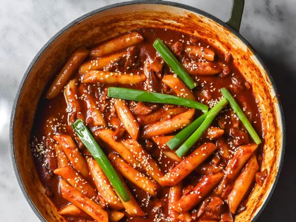

Home
Tteokbokki

Prep Time: 10 mins
Active Time: 10 mins
Total time: 20 mins
Ingredients
- 1/2 Onion sliced
- 1/3 Cabbage sliced
- 3 cups Korean Rice Cake
- 2 cups Dashi Stock or Vegetable Stock
- 1.5-2 tbsp of Gochujang
- 1 tbsp Soy Sauce
- 0.5 tbsp Sugar
- 1 tbsp Garlic minced
- 3 tsp Korean Chilli Flakes
- 1 tbsp Honey
- 1 tsp Black Pepper optional
- 1 cup Mozzarella Cheese shredded
- 1 cup fish cakes optional
Instructions
- Turn the heat up to medium-high and add Gochujang, Sugar, Gochugaru, Honey, Garlic, black pepper, and Soy Sauce.
- Add a splash of dashi stock, Mix, and let it simmer for 1-2 minutes.
- Pour in the rest of the dashi stock and bring to a simmer.
- Once simmering, add in onion and let it simmer for 3 minutes.
- Add rice cake and cook for another 5-6 minutes; make sure that all the rice cake is soaked in the sauce.
- Finally, add in any toppings of your choice, I like fish cake and cabbage, and simmer for another 3-4 minutes.
- Add 1 cup of cheese and broil it in the oven till cheese is melted, or cover with a lid on so the cheese fully melts.